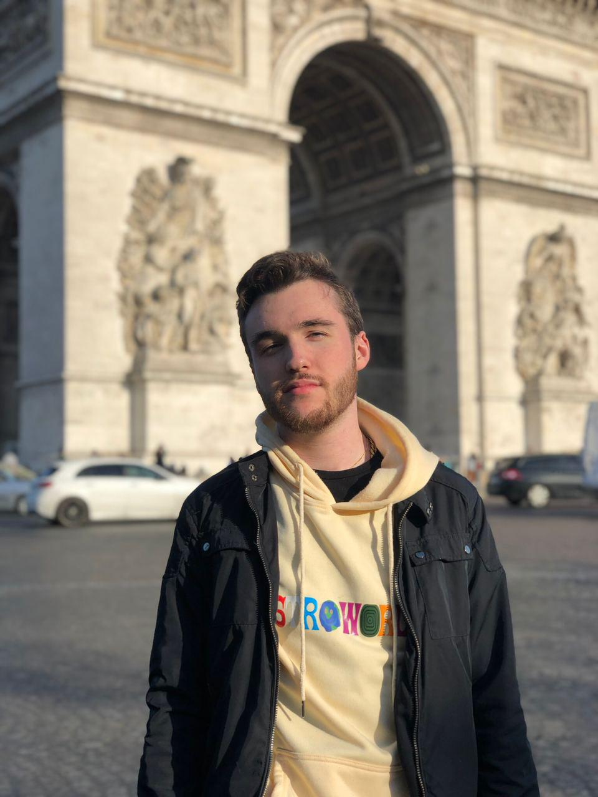
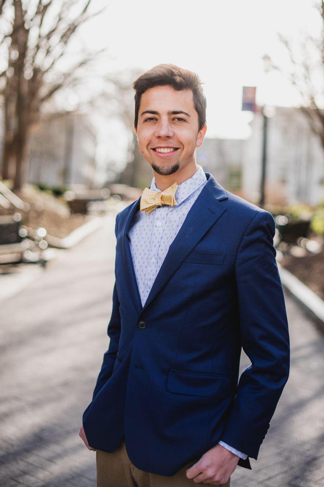
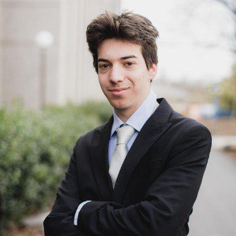
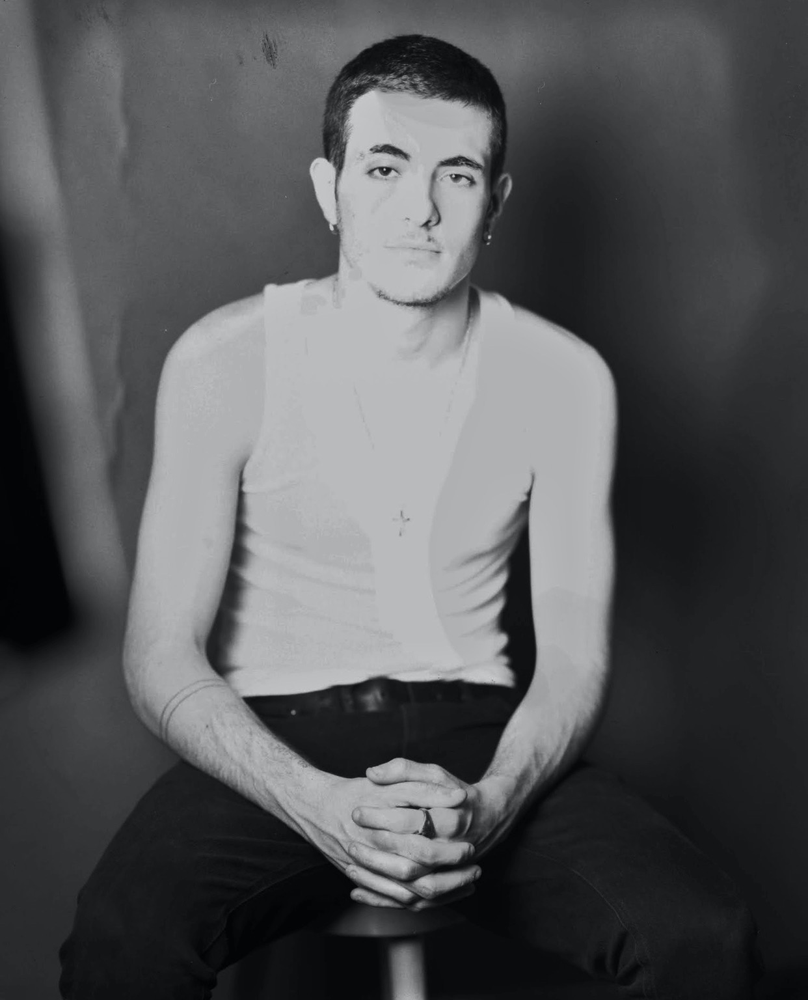
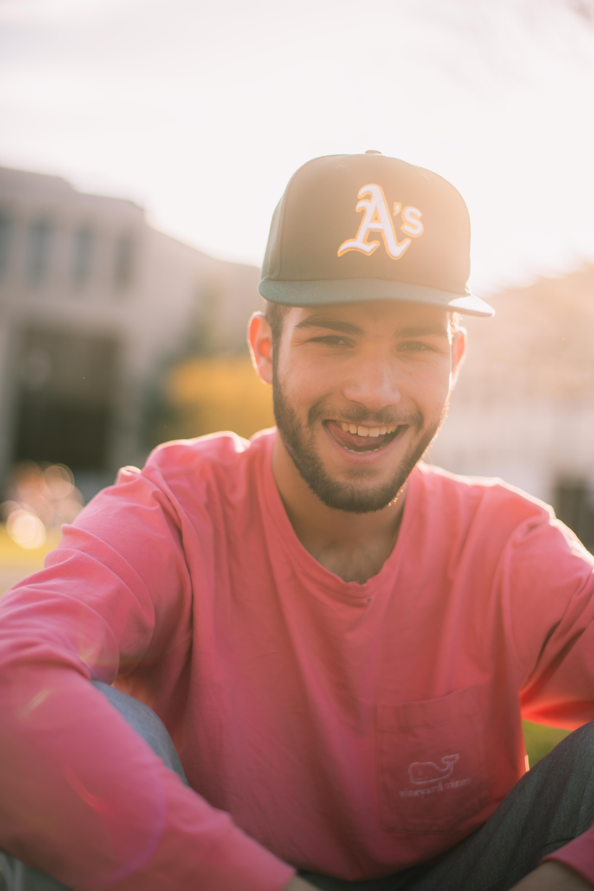
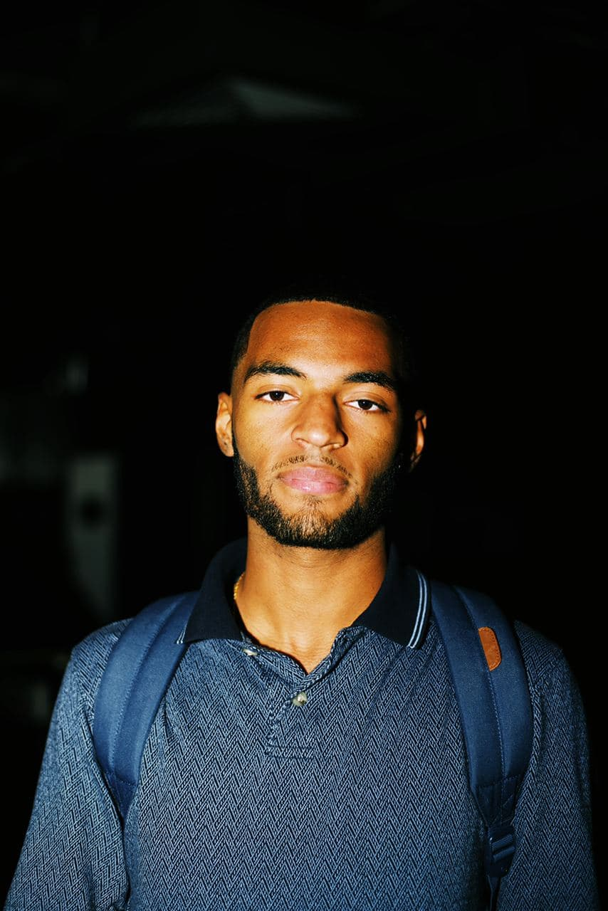
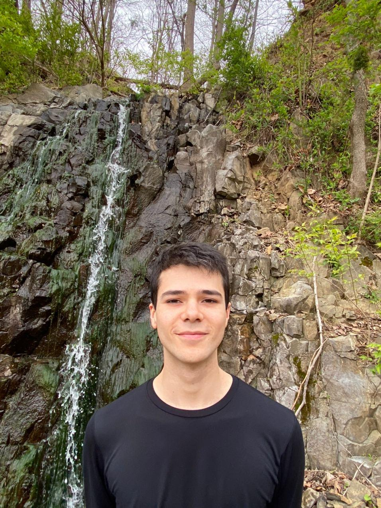

Home Articles Podcasts Playlists Videos
About
Kolosal
Kolosal is a Worldwide Music Content creation source for artists for reliable news and recommendations regarding the music industry
FIND US ANYWHERE
Writers
Noah Danz

Noah Danz is a Kolosal writer/contributor from Lower Merion, Pennsylvania & born in Baltimore, Maryland. Music has always been a passion for him ever since he was old enough to play the piano in his childhood home.
Alex Gervais-Scott
Alex, who also goes by stage name GS, is a writer/contributor from Lower Merion, Pennsylvania and born in Brussels, Belgium. Raised by a French mother and a British father, Alex now spends his time in Paris, France working on his own music. He is excited to share his views and knowledge of music through Kolosal and help make it a great success!
Sean Carlson
Sean is a DC-born, but Vermont-raised music fanatic who’s had a passion for music ever since his mom first made him take piano lessons as a kid. Growing up outside of the states, he’s heard everything from the ear-bursting bachata music of the Dominican Republic to the underground Bollywood hits of South Delhi. He’s hoping to turn Kolosal into the project that brings it all together.
Caillin Reimer
Caillin is Washington Heights, New York born & raised and currently resides in North West DC
Oliver Jager
Oliver
Arman Motamed
Arman
Ethan Frost

Ethan
Adrien Gomez
Adrien
Camilo Ortiz
Camilo